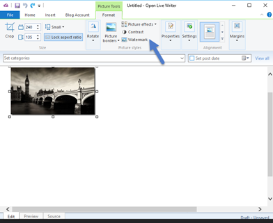

When you add a picture to your blog post, you will be show the Picture Tools dialog box. You can also get there by clicking on a picture. 
Click on Watermark - it's in the middle of the ribbon, third choice down.
The Watermark dialog box will appear

You can then add your watermark.